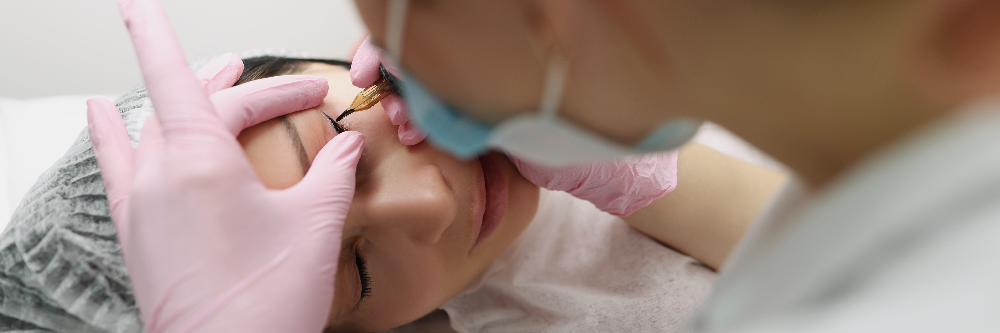
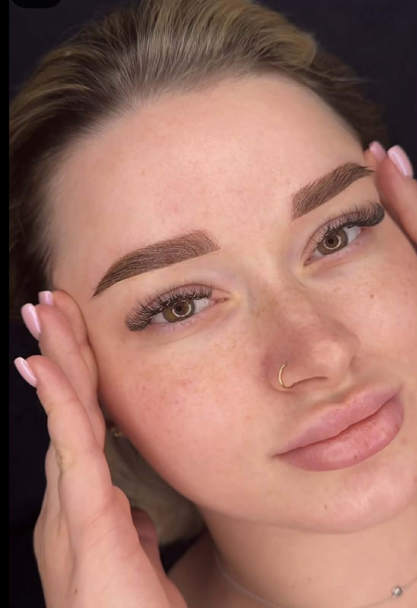
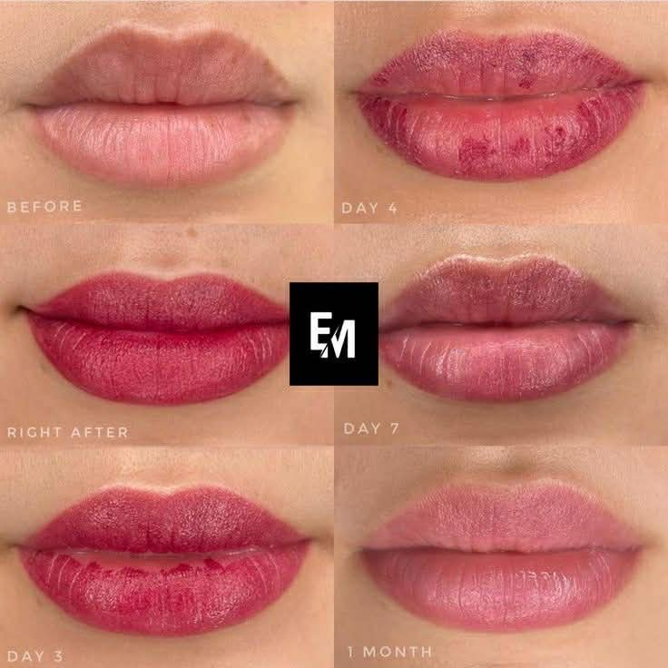
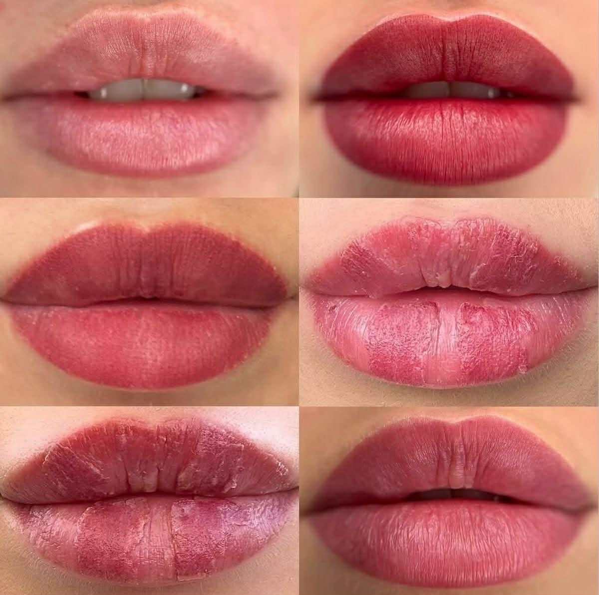

Gyógyulási Folyamat | útmutató
Portfólió
Szolgáltatások

Idővonal alapú áttekintés
A teljes gyógyulási folyamat rendszerezve ,napokra bontva
Napokra bontott gyógyulás
Őszinte képet adunk arró hogyan változik a bőr a kezelés után.
Mi számit normálisnak ?
Segitünk felismerni a természetes reakciókat és a figyelmesztető jeleket.

A kezelés utáni első órák a regeneráció kezdetét jelentik. Ami most intenzívebbnek látszik, az a gyógyulás természetes része – a végleges, lágyabb árnyalat néhány nap alatt alakul ki.

Sminktetoválás után az elhalt hámsejtek leválnak, ami finom hámlás formájában láthatóvá válik. Ez nem a pigment „eltűnését” jelenti, hanem a felszín megújulását: a szín a mélyebb rétegben stabilan rögzül.

A kezelés utáni első órák a regeneráció kezdetét jelentik. Ami most intenzívebbnek látszik, az a gyógyulás természetes része – a végleges, lágyabb árnyalat néhány nap alatt alakul ki.